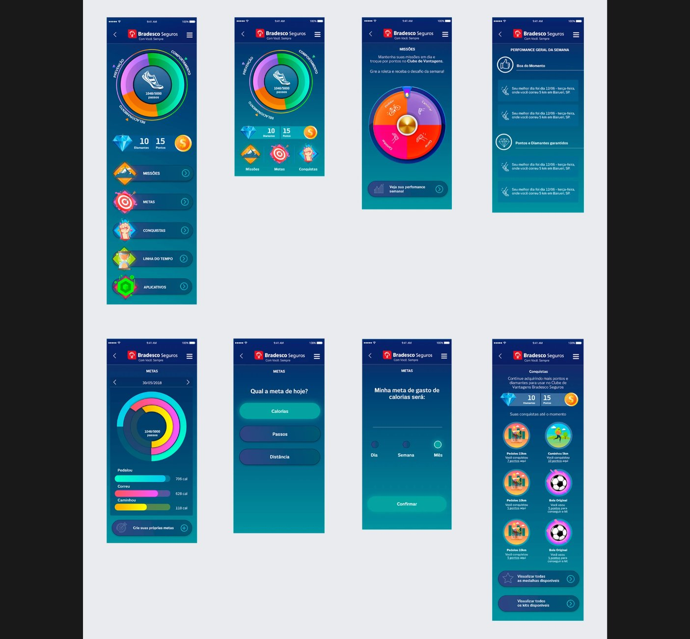
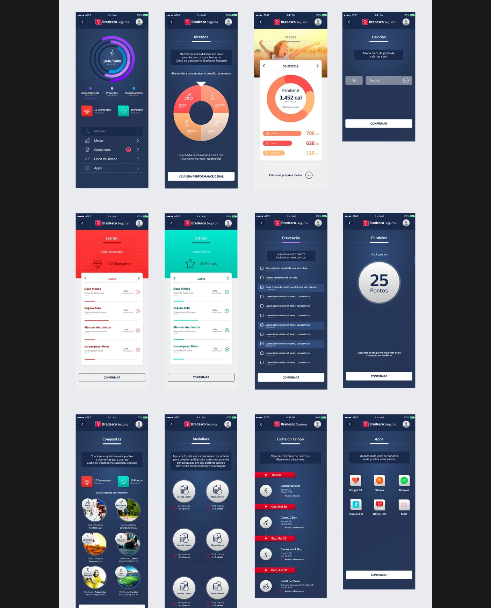

← Back to workCase Study 04 — Insurance · Financial Services
Bradesco Seguros
Two years inside Latin America's largest insurance company — a customer gamification platform, a retirement-planning simulator, and the broader digital-health and financial-protection portfolio around them.
Roles
Mid-Level → Senior UX/UI Designer
Timeline
May 2017 – Sept 2019 (2 years, 5 months)
Department
Digital Transformation & Innovation
Tools
Adobe XD, Axure RP, Photoshop, Illustrator
Business context
Bradesco Seguros is the largest insurance company in Latin America, a 100% Brazilian company and part of Grupo Bradesco — one of the country's most valuable brands. I worked for two years in the company's Digital Transformation and Innovation department, first as a Mid-Level and later as a Senior UX/UI Designer, partnering with Business Analysts, Stakeholders, and front-end and back-end developers across a wide product portfolio.
Personal Retirement Income Planning Simulator
Personal retirement planning — known in Brazil as Previdência Privada — is one of Bradesco Seguros' most sought-after and sold products. This simulator let customers and prospects run their own online simulation without visiting a bank or insurance agency, in three steps: define the goal, define the plan, see the projected result. I ran benchmarking and UX research, created personas and the user journey, and used A/B testing to refine the flow — defined against the Bradesco Seguros Design System. The simulator brought measurable results in lead generation and retirement-plan contracts.
bradesco.com.br/previdencia/simulador
Objetivo
Definições
Resultado
Qual o objetivo da sua previdência privada?
Para realizarmos a simulação ideal para você, escolha o principal objetivo da sua Previdência Privada.
☀️Sua aposentadoria
🎓Futuro de jovens
🤝Planejamento sucessório
🎯Alcance suas metas
Step 1 — Objetivo. The goal a customer picks here quietly changes which questions and defaults appear in step 2.
bradesco.com.br/previdencia/simulador
Objetivo
Definições
Resultado
Detalhes do perfil
Qual sua idade?
30
Com qual idade deseja se aposentar?
60
Qual seu sexo biológico?
Selecione ▾
Detalhes do plano
Tipo de simulação
Quanto posso contribuir por mês
Valor de contribuição inicial (opcional)
Digite apenas números
Valor de contribuição mensal
Digite apenas números
Step 2 — Definições. Profile and plan details in one screen — the same fields serve two different simulation types ("how much can I contribute" vs. "how much do I want to receive").
bradesco.com.br/previdencia/simulador
Objetivo
Definições
Resultado
Renda mensal estimada
R$ 1.999,99
Contribuição inicialR$ 800,00
Contribuição mensalR$ 247,15
Idade de benefício60 anos
Total projetadoR$ 356.178,82
● Total acumulado ● Total investido
Rentabilidade esperada durante o período de acumulação: 8%
Step 3 — Resultado. Projected total and monthly income, plus an accumulated-vs-invested chart the customer can re-run with a different expected return.
Mockups above are an original recreation of the simulator's information architecture and flow, built for this portfolio — not exported production screens.
My activities
Identified problems in the company's digital channels through heuristic analysis, UX research, and usability testing
Created new products and ideas through market analysis and benchmarking, scoped with the Discover → Define → Develop → Deliver process
Promoted the connection between Business, Technology, and User through the Digital Experience
Facilitated workshops and searched for innovations to improve the Design team's practice
Onboarded new employees into the Digital Design team (mid-level, junior, and intern)
Created personas and user journeys for projects; led facilitation and immersion with Design Thinking
Led Gamification projects; evangelized Design System and DesignOps practices within Bradesco Seguros
A proposal from the Digital Transformation department's UX and UI team: a gamification layer inside the Bradesco Seguros app, rewarding customers with kits, symbolic medals, and points redeemable at the Clube de Vantagens Bradesco Seguros — reinforcing the brand and customer loyalty through everyday engagement.
Release 1 — before the Design System caught up
The first release didn't follow Bradesco Seguros' style guide. Its layout read closer to a mobile video game than an insurance app, and Stakeholders and Business Analysts in the Digital Transformation department didn't accept it well.

Release 1. Vibrant, game-like visual language — missões, metas, conquistas, and a spin-the-wheel weekly challenge. Clear concept, wrong visual system for an insurance brand.
Release 2 — realigned to the Design System
Release 2 followed the UX proposal made in the wireframe stage and Bradesco Seguros' actual Style Guide and Design System. The concept dropped the "heavy" game look for a clearer, more credible execution — the final delivery had more than 30 screens.

Release 2. Same mechanics — missions, goals, points, medals — now expressed in Bradesco Seguros' own navy-and-white visual language, integrated with a points/diamonds statement, a timeline, and connected fitness apps (Google Fit, Strava, Moves, RunKeeper).
The decision this taught me
Release 1 was a reasonable gamification concept that failed for a brand reason, not a UX reason: it didn't look like something an insurance customer would trust. Rebuilding it inside the existing Design System — rather than defending the original visual direction — was what got the platform accepted and shipped.
UX Proposal for SDPRO — Intranet Portal
SDPRO (as it was initially called) was an initiative from the Digital Experience team to create an intranet portal for the Bradesco Seguros Digital Solutions Directorate — engaging and defending the work of the people inside the Digital Transformation area. My participation was focused as a UX Designer, working primarily on a navigable UX wireframe with the team.
Other representative work
Bradesco Saúde — digital health and insurance experiences within a mature consumer ecosystem
Portal de Negócios — workflows for insurance brokers managing commercial activity and product information
Bradesco Auto — design within an established auto-insurance experience
Travel, home, and electronics insurance — accessible, lower-commitment protection products
Outcome
BS Play shipped after being rebuilt to follow Bradesco Seguros' Design System — the first release, built outside it, was not accepted by stakeholders
The retirement-planning simulator generated measurable leads and contracts without requiring a branch or agency visit
Built the foundational breadth — regulated products, multiple audiences, a mature brand — that shaped my later work at SulAmérica, Vivo, and Welbe
Evidence note — case details reflect what's documented in these projects' public Behance case studies. Not all Bradesco Seguros projects can be shown here for reasons of confidentiality.
What I learned
A gamification concept can be right and still fail if it doesn't speak the brand's visual language — Release 1 of BS Play taught me that "fun" and "on-brand" aren't optional trade-offs for a regulated financial product, they're both required. This experience across health, auto, pensions, and protection products is also where I first practiced adapting my process to the product instead of running one method by default — a habit that shaped every case study after this one.